Vizualizacija podataka
Predavanje 06
Prikaz tabličnih podataka
- Tablični oblik (tabular data) je najčešći način na koji će nam biti dostupan naš skup podataka
- Osvrnuti ćemo se na nekoliko osnovnih koncepata vezanih uz prostorni prikaz tabličnih podataka
- kako ih možemo prikazati u prostoru
- različiti načini orijentacije
- gustoća prikaza
Prikaz tabličnih podataka
- Do sada smo već nekoliko puta naglašavali kako je prostorni kanal jedan od najboljih odabira za vizualno enkodiranje podataka
- najveća učinkovitost i za kvantitativne i kvalitativne podatke
- tri različita načina prikaza
- uređena pozicija na ravnini
- neuređena pozicija na ravnini
- duljina
Ključevi i vrijednosti
- Kod prikaza (enkodiranja) podataka važna nam je razlika između ključeva (key) i vrijednosti (value) atributa
- ključ je nezavisni atribut koji se može koristiti kao jedinstvena vrijednost (index) za pretragu unutar tablice
- vrijednost je zavisni atribut - podatak u ćeliji tablice
- Ključevi mogu biti kategorički ili redni, a vrijednosti mogu dodatno biti i kvantitativni
- Osmišljavanje vizualizacije:
- koliko imamo ključeva i vrijednosti?
- hoćemo li prikazivati samo vrijednosti?
- jednu ili više vrijednosti (scatterplot)
Kvantitativne vrijednosti
- Prikaz kvantitativnih vrijednosti kroz kanal prostorne pozicije je prilično jednostavan
- odabrani atribut je vezan uz prostornu poziciju duž osi
- svaka vrijednost je predstavljena oznakom
- možemo imati dodatne kanale (veličina, boja)
- Primjer:
| Idiom | Scatterplot |
|---|---|
| Podaci | Tablica - dvije kvantitativne vrijednosti |
| Enkodiranje | Prikaz vrijednosti kroz vertikalnu i horizontalnu prostornu poziciju odabrane oznake |
| Zadatak | Pronaći trendove, distribuciju, korelaciju, odstupanje, pronaći grupe |
| Razmjer | Elementi - stotine |
Kategoričke vrijednosti
- Korištenje prostora za prikaz kategoričkih vrijednosti je složenije nego za kvantitativne vrijednosti
- ovi atributi nemaju prirodni redoslijed
- Koristi se ideja regije kao susjednih ograničenih prostora
- elementi sa istom vrijednošću kategoričkog atributa se prikazuju u istoj regiji
- prostorna blizina služi za prijenos informacije o sličnosti
- Distribuciju regija možemo podijeliti na tri operacije:
- razdvajanje (separate) u regije
- usklađivanje/poravnanje (align) regija
- uređivanje redoslijeda (order) regija
- Razdvajanje se radi po kategoričkoj vrijednost, a usklađivanje i redoslijed po nekoj uređenoj vrijednosti
Kategoričke vrijednosti
| Idiom | Stupčasti graf (Bar Chart) |
|---|---|
| Podaci | Tablica - jedan kvantitativni atribut (vrijednost) i jedan kategorički atribut (ključ) |
| Enkodiranje | Linijska oznaka, vrijednosti atribut prikazan poravnatom vertikalnom pozicijom, atributi ključa odvojeni horizontalno |
| Zadatak | Očitanje (lookup) i usporedba vrijednosti |
| Razmjer | Desetke atributa ključa |
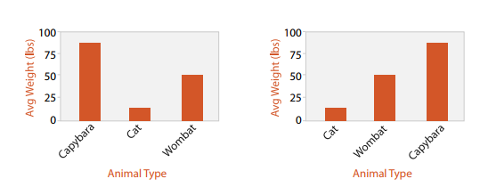
- Atribut ključa "Animal Type" odvaja oznake po horizontalnoj osi
- Vrijednosni atribut "avg weight" je izražen kroz poravnatu vertikalnu poziciju
- U prvom grafu su stupci poredani abecedno (po imenu vrste), a u drugom po vrijednosti
Kategoričke vrijednosti
| Idiom | Stacked Bar Chart |
|---|---|
| Podaci | Višedimenzionalna tablica - jedan kvantitativni atribut i dva kategorička atributa |
| Enkodiranje | Složena oznaka - stupac od više dijelova u kojima je svaka kategorija sekundarnog ključa kodirana duljinom. Odvojeni stupci predstavljaju kategorije primarnog ključa |
| Zadatak | Odnos jednog dijela prema cjelini, očitanje vrijednosti, pronalazak trendova |
| Razmjer | Ključni atribut (glavna os) - deseci do stotinjak razina Složeni stupac - nekoliko do desetak razina |
- Prvi ključni atribut je dan u tjednu - prikazano po horizontalnoj osi
- Drugi kategorički atribut je tip proizvoda - kodirano bojom
- Kvantitativni atribut je potrošeni iznos - možemo usporediti iznos po danima (ukupna potrošnja) ili u kojem danu se koliko troši na pojedine kategorije
- Također možemo promatrati i jednu kategoriju po danima
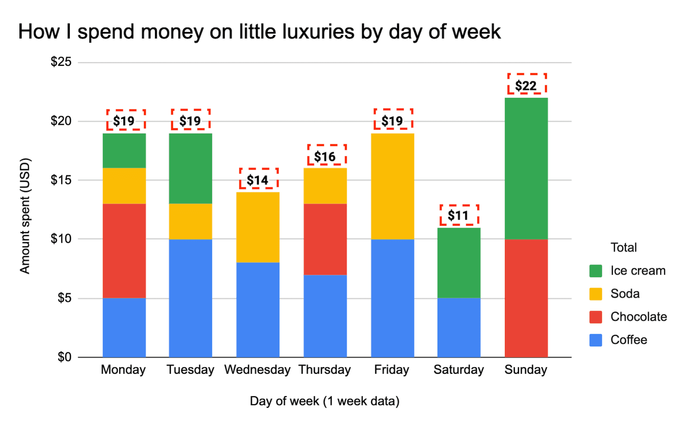
Kategoričke vrijednosti
- Uz stupčasti graf, postoje još dva idiom za prikaz jednog vrijednosnog i jednog atributa ključa - linijski (line chart) i točkasti (dot chart) grafovi
- Postoji jedna velika razlika između ova dva idioma
- linijski graf se ne može koristiti za kategoričke ključeve (ne možemo ih direktno usporediti)
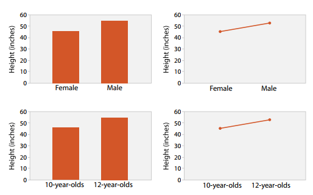
- Stupčasti graf podrazumijeva diskretnu usporedbu (visina po spolu)
- Linijski graf potiče procjenu trenda podataka - visina raste kako se godine povećavaju
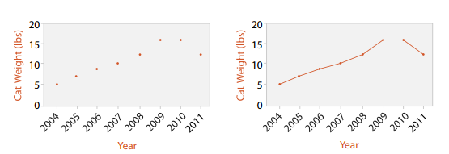
Dva ključa - matrični raspored
- Skupovi podataka sa dva ključa su često uređeni u 2D matrični raspored - jedan ključ po stupcu, a drugi po retku
- površina ćelije je regija za predstavljanje vrijednosti (boja)
- Takav prikaz se naziva heatmap
| Idiom |
Heatmap |
|---|---|
| Podaci | Tablica - dvije kategoričke vrijednosti ključa i jedan kvantitativni vrijednosni atribut |
| Enkodiranje | Prostorne (area) oznaka raspoređene u 2D matricu sa divergirajućom mapom boja |
| Zadatak | Pronalazak grupa, odstupanja, sumarni prikaz |
| Razmjer | Elementi - milijun; Razine kategorijskih atributa - stotine, razine kvantitativnih atributa - do 10 |
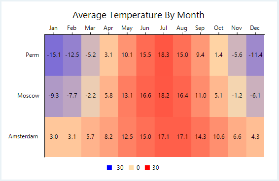
Dva ključa - matrični raspored
- Stupci i reci matrice se dodatno mogu poredati
- tako dobijemo clustered heatmap
- dodatno enkodiranje - dendogram
| Idiom |
Clustered Heatmap |
|---|---|
| Podaci | Derivirani podaci - dva hijerarhijska skupa (cluster) za retke i stupce |
| Enkodiranje | Heatmap: 2D matrični prikaz, uređen hijerarhijski po oba skupa Dendogram: linijske oznake čine stablo sa parent-child vezama |
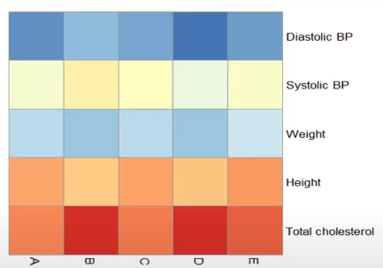
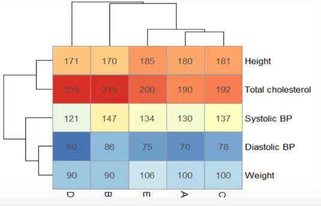
Dva ključa - matrični raspored
- Tablični podaci se mogu prikazati i u SPLOM (Scatterplot Matrix) idiomu tj. matrici kod koje svaka ćelija sadrži jedan scatterplot graf
- Prikazuje sve kombinacije parova atributa
| Idiom |
Scatterplot Matrix |
|---|---|
| Podaci | Tablica |
| Derivirani podaci | Uređeni atribut ključa - lista originalnih atributa |
| Enkodiranje | Scatterplot grafovi u matričnom prikazu |
| Zadatak | Traženje korelacije, trendova, odstupanja |
| Razmjer | Atributi: desetak Elementi: desetak do stotinjak |
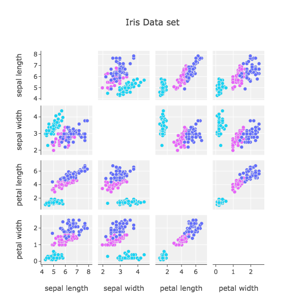
Višestruki ključevi
- U slučaju kada imamo više ključeva, podatke možemo prikazati i u 3D volumetrijskom prikazu
- ne preporuča se za podatke koji nisu prostorni
- okluzija, perspektivna distorzija... (prethodno predavanje)
- Rekurzivna podjela unutar liste ili matice
- i dalje vrijedi poravnavanje i uređivanje (order i alignent)
- dodaje se svojstvo sadržavanja (containment)
Prostorna orijentacija osi
- Još jedna odluka koju moramo donijeti prilikom osmišljavanja vizualizacije je orijentacija prostornih osi
- svi prethodni primjeri su koristili pravokutni raspored
- dvije okomite osi
- svi prethodni primjeri su koristili pravokutni raspored
- Imamo još dva načina orijentacije osi
- paralelni prikazi
- kružni prikazi
Paralelni prikaz
- Scatterplot je primjer prikaza sa pravocrtnom orijentacijom
- visoka preciznost za dva atributa
- možemo koristiti dodatni kanal manje preciznosti (neprostorni)
- problem nerazdvojivosti kanala
- Idiom paralelnih koordinata je pristup za prikaz više kvantitativnih atributa koristeći prostornu poziciju
- osi su međusobno paralele
- jedan element je predstavljen pravcem koji prolazi kroz paralelne osi (najviše jednom po osi)
- može poslužiti za provjeru korelacije
Paralelni prikaz
| Idiom | Paralelne koordinate |
|---|---|
| Podaci | Tablica - višestruki vrijednosni atributi |
| Enkodiranje | Paralelni prikaz - horizontala pozicija odvaja osi, vertikalna pozicija predstavlja vrijednost koja je povezana sa susjednim osima |
| Zadatak | Pronalazak trendova, odstupanja, ekstrema, korelacije |
| Razmjer | Atributi: desetak duž sporedne osi Elementi: stotine |
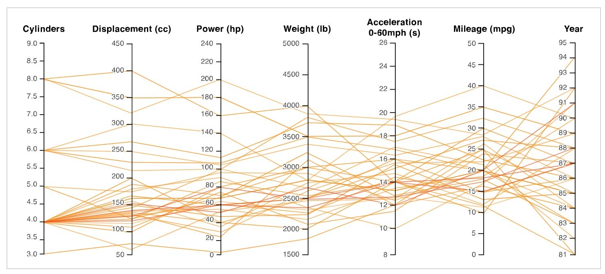
Kružni prikaz
- Kod kružnog prikaza elementi su raspoređeni unutar kružnice koristeći kanal kuta uz dodatak jednog ili više linearnog prostornog kanala
- Prirodni koordinatni sustav za ovaj prikaz su polarne koordinate
- jedna dimenzija je kut od početnog pravca
- druga je udaljenost od središta
- Matematički, radi se o istom prikazu sa različitim transformacijama
- Vizualno - radi se o promjeni kanala (i svime što ide uz to)
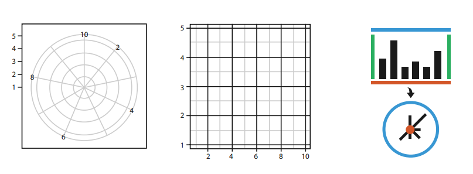
Kružni prikaz
- Najpoznatiji kružni idiom je pie chart
- enkodiraju jedan atribut sa kanalom kuta i oznakom površine
- problem sa procjenom površine
- koristan kod relativnog omjera jednog dijela u odnosu na cjelinu (zbroj mora biti 100%)
| Idiom | Pie chart |
|---|---|
| Podaci | Tablica - jedan kvantitativni atribut i jedan kategorički |
| Enkodiranje | Odlomci kružnice (kriške) sa kanalom kuta, kružni prikaz |
| Zadatak | Odnos dio-cjelina |
| Razmjer | Desetak kategorija |
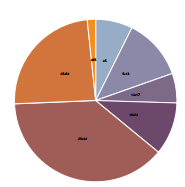
Kružni prikaz
- Bolji odabir sa kružnim prikazom je graf polarnih površina tj. polar area chart - enkodira iste podatke (jedan kvantitativni atribut - iako ih može imati i više - stacked)
- koristi se kanal duljine, ne kuta
| Idiom | Polar area graph |
|---|---|
| Podaci | Tablica - jedan kvantitativni atribut i jedan kategorički |
| Enkodiranje | Odlomci kružnice (kriške) sa kanalom duljine, kružni prikaz |
| Zadatak | Odnos dio-cjelina |
| Razmjer | Desetak kategorija |
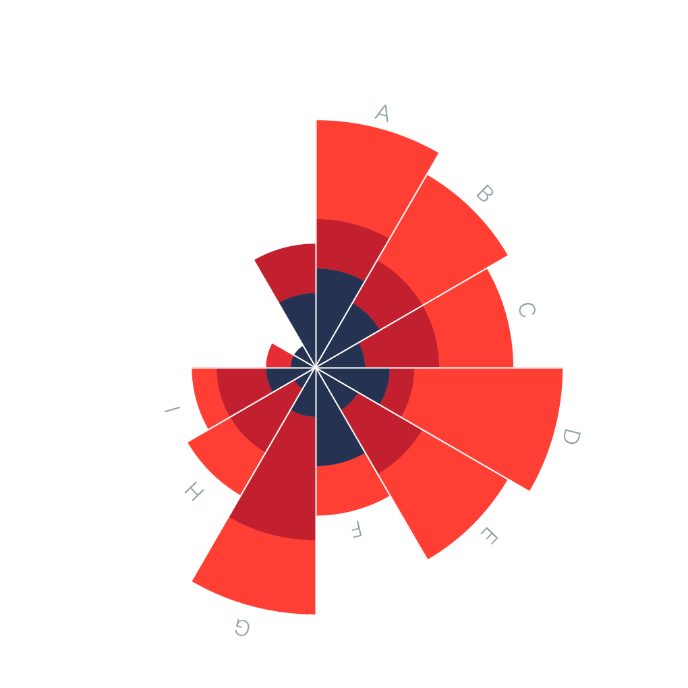
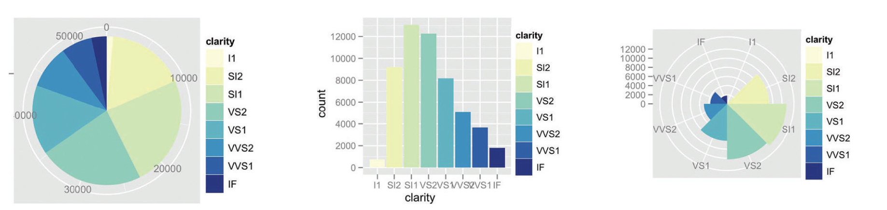